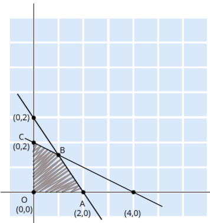

Problem Statement:
Maximize Z = 3x1 + 4x2
Subject to the constraints:
x1 + 2x2 ≤ 4
3x1 + 2x2 ≤ 6
x1, x2 ≥ 0 (Non-negativity constraint)
- Step 1: Plot the constraints on a graph
We start by finding the points where the constraints intersect the axes, as these points
will help us plot the lines representing the constraints.
For the constraint x1 + 2x2 ≤ 4:
To find the points where the line intersects the x1 and x2 axes:
- If x2 = 0, then x1 = 4,
giving the point
(4, 0).
- If x1 = 0, then x2 = 2,
giving the point
(0, 2).
For the constraint 3x1 + 2x2 ≤ 6:
- If x2 = 0, then x1 = 2,
giving the point
(2, 0).
- If x1 = 0, then x2 = 3,
giving the point
(0, 3).
- Step 2: Draw the lines and identify the feasible region
We now plot the lines x1 + 2x2 = 4 and
3x1 + 2x2 = 6 on a graph using the points found
earlier.
The feasible region is the area where both constraints overlap, and it represents the
possible
values of x1 and x2 that satisfy
all
constraints.
Since both constraints have ≤, the feasible region will be the area below both lines,
towards
the origin (0, 0).

- Step 3: Identify the corner points of the feasible region
The optimal solution of an LPP in the graphical method will always lie at one of the
corner
points (vertices) of the feasible region.
The corner points in this example are:
- O: (0, 0) – the origin
- A: (2, 0) – where 3x1 + 2x2 =
6
intersects the x1-axis
- C: (0, 2) – where x1 + 2x2 =
4
intersects the x2-axis
- B: The intersection of the two constraints
x1 + 2x2 = 4 and
3x1 + 2x2 = 6. To find B, we solve both
equations
simultaneously:
Solve the system:
x1 + 2x2 = 4
3x1 + 2x2 = 6
Subtract the first equation from the second:
(3x1 + 2x2) - (x1 + 2x2) = 6
- 4
This simplifies to:
2x1 = 2, so x1 = 1.
Substitute x1 = 1 into
x1 + 2x2 = 4:
1 + 2x2 = 4, so x2 =
3/2.
The intersection point B is (1, 3/2).
- Step 4: Evaluate the objective function at each corner point
Now, we substitute the coordinates of each corner point into the objective function
Z = 3x1 + 4x2 to find the value of Z at each point:
- At O: Z = 3(0) + 4(0) = 0
- At A: Z = 3(2) + 4(0) = 6
- At B: Z = 3(1) + 4(3/2) = 3 + 6 = 9
- At C: Z = 3(0) + 4(2) = 8
- Step 5: Determine the optimal solution
Since the problem is a maximization problem, the optimal solution will be the point that
gives the maximum value of Z.
From the calculations, we see that the maximum value of Z is 9, which occurs at point
B (1, 3/2).
Thus, the optimal solution is:
- Step 6: Minimization (if required)
If we were tasked with minimizing Z instead of maximizing it, the minimum value would
occur
at the origin O (0, 0), where Z = 0.